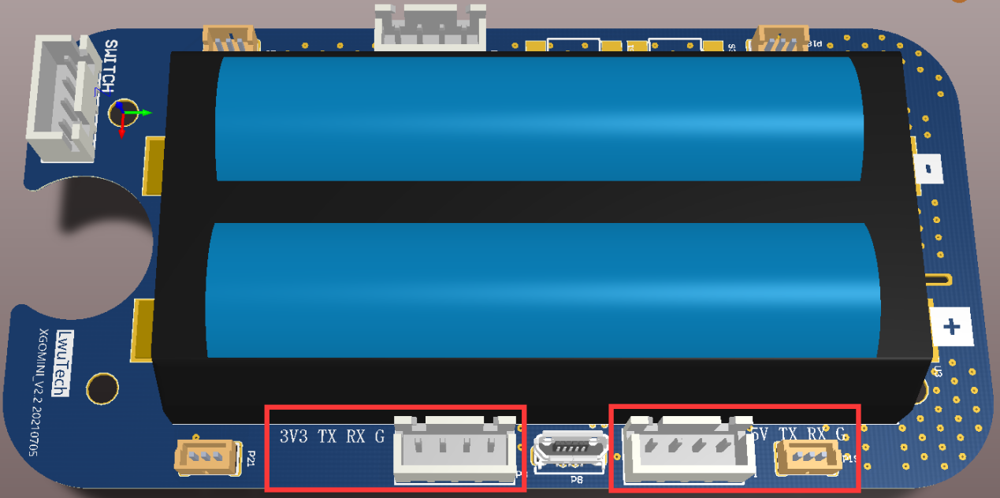
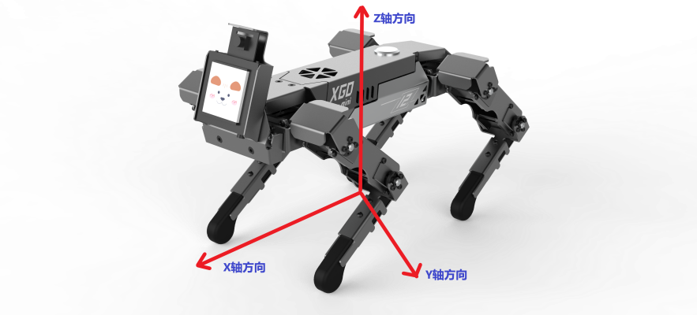
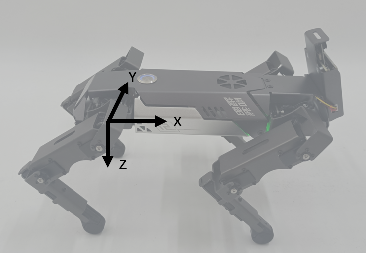

Document purpose
This document applies to the communication protocol of data interaction between any host computer and XGO series robot dog driver board. It is suitable for secondary development of XGO by high-level developers.The communication protocol is based on standard TTL serial communication and features XH2.54 4PIN interface connection.
Update record
2022.3.10 Create.
Hardware connection
Use a hexagonal wrench to unscrew the two screws on the back, the screws on the left and right sides, and the two screws on the tail, remove the back panel of the robot dog, and unplug the switch cable. As shown in the figure below, there are two serial communication interfaces on one side of the motherboard, which are connected according to the motherboard silkscreen line sequence and the host computer line sequence (TX to RX, RX to TX), and then you can debug. The external power supply voltages of the two terminals are 5V and 3.3V respectively, which cannot be used at the same time. By default, the 3.3V terminal is occupied by the AI module. If you want to use other devices for serial control, please unplug the AI module and the motherboard. 
Software interface
Standard TTL serial communication.
| Baud Rate | 115200 |
|---|---|
| Data Bits | 8 |
| stop bit | 1 |
| Parity Bits | None |
Data frame format
The data frame is a fixed format: frame header + frame length + data + checksum + frame tail.
| Frame header | Fixed to 0x55 0x00 |
|---|---|
| Frame Length | Number of bytes in the entire data frame |
| Data | has different meanings depending on the type of command, see Part II |
| Checksum | Add all bytes of length and data, take the least significant byte, and negate |
| End of frame | Fixed at 0x00 0xAA |
Instructions
Write command, no response (0x00)
| Frame Header | Frame Length | Command Type | First Address | Data | Checksum | Frame End |
|---|---|---|---|---|---|---|
| 0x55 0x00 | 0x00 | data | 0x00 0xAA |
The write command will continuously modify the data starting from the first address, and no response will be generated. >For example, modify the forward speed of the robot dog, the forward speed address is 0x30, so that it advances at the maximum speed, that is, the speed content is 0xFF, the specific instructions are as follows: >0x55 0x00 0x09 0x00 0x30 0xFF 0xC7 0x00 0xAA > where the checksum calculation process is as follows: >0x09+0x00+0x30+0xFF=0x138, take the lowest byte 0x38, negate it to get 0xC7
Read command, there is a response (0x02)
| frame header | frame length | command type | first address | read length | checksum | **frame end* * |
|---|---|---|---|---|---|---|
| 0x55 0x00 | 0x02 | uint_8 | 0x00 0xAA |
The write command will continuously read the data starting from the first address, and no response will be generated. The format of the returned packet is:
| Frame Header | Frame Length | Command Type | First Address | Data | Checksum | Frame End |
|---|---|---|---|---|---|---|
| 0x55 0x00 | 0x12 | data | 0x00 0xAA |
>For example, read the angles of 12 servos, 0x50 is the address of the first servo position, and 0x0C means read 12 consecutively. The specific instructions are as follows: >0x55 0x00 0x09 0x02 0x50 0x0C 0x98 0x00 0xAA > where the checksum calculation process is as follows: >0x09+0x02+0x50+0x0C=0x67, negate to get 0x98 >Read return packets: >0x55 0x00 0x14 0x12 0x50 0x80 0x80 0x80 0x80 0x80 0x80 0x80 0x80 0x80 0x80 0x80 0x80 0x89 0x00 0xAA
Robot dog coordinate system definition
Machine coordinate system
In the initial standing position, the origin is directly below the fuselage, the forward direction of the robot dog is the positive X axis, the left is the positive Y axis, and the top is the positive Z axis. 
Single leg coordinate system
The single-leg coordinate system is used to describe the position of the foot. The four legs correspond to four independent single-leg coordinate systems. The thigh joint is the origin. The forward direction of the robot dog is the positive x-axis, the left is the positive Y-axis, and the bottom is the positive Z-axis. Towards. 
The MemTable of XGO is as below
| Adress | Function | Read-Write | Initial Value | Note | Mode |
|---|---|---|---|---|---|
| 0x00 | Mode of operation | Read | 0x00 | State information | |
| 0x01 | Battery level | Read | 0xff | Range: 0-100, linearly corresponding to the lowest-highest battey level | |
| 0x02 | XGO version | Read | 0x00 MINI 0x01 Lite 0x02 PRO | ||
| 0x03 | Performance mode | Write | 0x00 | 0x00 normal control mode 0x01 cyclic action | |
| 0x04 | Calibration mode | Write | 0x00 | 0x01 Enter the calibration mode 0x00 Exit the calibration mode | |
| 0x13 | Bluetooth | Write | XGOMINI | The length of the name is 10 bytes, and it cannot be Chinese. After naming, the Bluetooth name is XGO_xxxxxx | |
| 0x20 | Unmount Servo | Read-Write | 0x00 | 0x00 Servo in normal operation, 0x01 Unmount all servo, 0x11-0x14 Unmount 1-4 leg in order, 0x21-0x24 Remount 1-4 leg in order | debug mode |
| 0x21 | Reset zero posttion of servo | Write | 0x00 | 0x00 servo nornal ,0x01 record the current position as the zero position,Once set as 0x01, the register will automatically jump to 0x00 | |
| 0x30 | Forward/backward movement speed | Read-Write | 0x80 | Range: 0x00-0xff, linearly corresponding to the revers max. value-forward max. value. The forward direction is the same as the robot coordinate system | Whole unit mode |
| 0x31 | Left/right movement speed | Read-Write | 0x80 | Range: 0x00-0xff, linearly corresponding to the revers max. value-forward max. value. The forward direction is the same as the robot coordinate system | |
| 0x32 | Clockwise/counterclockwise rotation speed | Read-Write | 0x80 | The direction follows the right hand principle | |
| 0x33 | Body shift distance along the x direction | Read-Write | 0x80 | The point of contact between the foot and the ground remains unchanged and the body twists | |
| 0x34 | Body shift distance along the x direction | Read-Write | 0x80 | The point of contact between the foot and the ground remains unchanged and the body twists | |
| 0x35 | Body height | Read-Write | 0x80 | The point of contact between the foot and the ground remains unchanged and the body twists | |
| 0x36 | Angle at which the body rotates around the x axis | Read-Write | 0x80 | The direction follows the right hand principle | |
| 0x37 | Angle at which the body rotates around the y axis | Read-Write | 0x80 | The direction follows the right hand principle | |
| 0x38 | Angle at which the body rotates around the z axis | Read-Write | 0x80 | The direction follows the right hand principle | |
| 0x39 | A given period in which the body rotates around the x axis | Read-Write | 0x00 | 0x00 stops, 0x01-0xff linearly corresponds to the minimum-maximum rotation speed, this function cannot work at the same time as setting the position register directly | |
| 0x3A | A given period in which the body rotates around the y axis | Read-Write | 0x00 | 0x00 stops, 0x01-0xff linearly corresponds to the minimum-maximum rotation speed, this function cannot work at the same time as setting the position register directly | |
| 0x3B | A given period in which the body rotates around the y axis | Read-Write | 0x00 | 0x00 stops, 0x01-0xff linearly corresponds to the minimum-maximum rotation speed, this function cannot work at the same time as setting the position register directly | |
| 0x3C | mark time | Read-Write | 0x00 | 0x00 stop, 0x01-0xff linearly corresponds to the min.-max. marktime height | |
| 0x3D | Moving mode | Read-Write | 0x00 | 0x00 Move at normal speed 0x01 Move at slow speed 0x02 Move at high speed | |
| 0x3E | action | Write | 0x00 | List of action commands, 0 is the default stance 1-N means each action (0-N is decimal value), 1: lying down, 2: standing up, 3: creeping, 4: circling, 5: stepping, 6: squatting, 7: rolling , 8: pitching, 9: yawing, 10 three-axis rotation, 11 peeing, 12 sitting, 13 beckoning, 14: stretching, 15: waving, 16 swaying, 17 begging for food, 18 searching food, 19 shaking hands | |
| 0x80 | A given period in which the body shifts along the X axis | Read-Write | 0x00 | 0x00 stop, 0x01-0xff corresponds to the min.-max. rotation speed, the extent of movement is a half of the position limit | |
| 0x81 | A given period in which the body shifts along the Y axis | Read-Write | 0x00 | ||
| 0x82 | A given period in which the body shifts along the Z axis | Read-Write | 0x00 | ||
| 0x40 | X position of leg 1 | Read-Write | 0x80 | Range: 0x00-0xff, linearly corresponding to the reverse max. value-forward max. value, the forward direction is the same as the robot coordinate system | leg mode |
| 0x41 | Y position of leg 1 | Read-Write | 0x80 | ||
| 0x42 | Z position of leg 1 | Read-Write | 0x80 | ||
| 0x43 | X position of leg 2 | Read-Write | 0x80 | ||
| 0x44 | Y position of leg 2 | Read-Write | 0x80 | ||
| 0x45 | Z position of leg 2 | Read-Write | 0x80 | ||
| 0x46 | X position of leg 3 | Read-Write | 0x80 | ||
| 0x47 | Y position of leg 3 | Read-Write | 0x80 | ||
| 0x48 | Z position of leg 3 | Read-Write | 0x80 | ||
| 0x49 | X position of leg 4 | Read-Write | 0x80 | ||
| 0x4A | Y position of leg 4 | Read-Write | 0x80 | ||
| 0x4B | Z position of leg 4 | Read-Write | 0x80 | ||
| 0x50 | Position of Servo 11 | Read-Write | 0x80 | Range: 0x00-0xff, linearly corresponding to the reverse max. value-forward max. value | servo mode |
| 0x51 | Position of Servo 12 | Read-Write | 0x80 | ||
| 0x52 | Position of Servo 13 | Read-Write | 0x80 | ||
| 0x53 | Position of Servo 21 | Read-Write | 0x80 | ||
| 0x54 | Position of Servo 22 | Read-Write | 0x80 | ||
| 0x55 | Position of Servo 23 | Read-Write | 0x80 | ||
| 0x56 | Position of Servo 31 | Read-Write | 0x80 | ||
| 0x57 | Position of Servo 32 | Read-Write | 0x80 | ||
| 0x58 | Position of Servo 33 | Read-Write | 0x80 | ||
| 0x59 | Position of Servo 41 | Read-Write | 0x80 | ||
| 0x5A | Position of Servo 42 | Read-Write | 0x80 | ||
| 0x5B | Position of Servo 43 | Read-Write | 0x80 | ||
| 0x5C | Servo speed | Read-Write | 0x80 | Range: 0x00-0xff, linearly corresponding to the min. - max. value (only applicable under this mode) | |
| 0x5D | Standing posture | Write | 0x00 | 0x00 inactive. 0x01 The gear position returns to the standing position. Once set as 0x01, the register will automatically jump to 0x00 | |
| 0x61 | IMU state | Read-Write | 0x00 | 0x00 close 0x01 self-stabilizing mode | |
| 0x62 | ROLL | Read | 0x01 | ||
| 0x63 | PITCH | Read | 0x02 | ||
| 0x64 | YAW | Read | 0x03 |